Glow Mirror
iPhone · iPad · Mac
すぐ起動、
4K高画質ミラー。
開いた瞬間から鏡。画面に触れても誤作動せず、押した瞬間で止まる静止画、10秒動画で後ろ姿までチェックできます。1つのアプリで、iPhone・iPad・Macのどれでも。

Screens
App Storeに載せている、6つの画面。
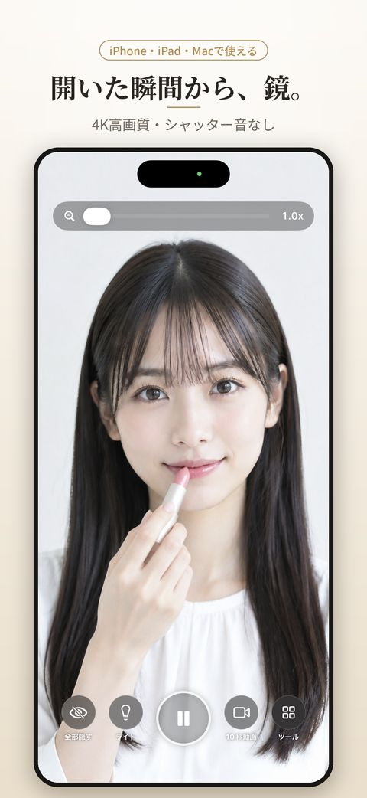
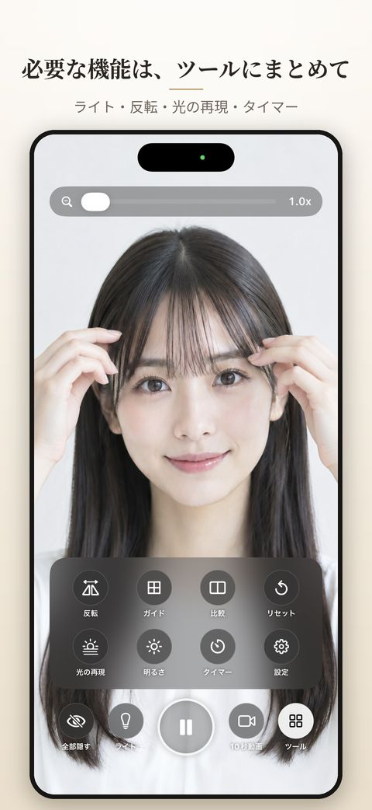
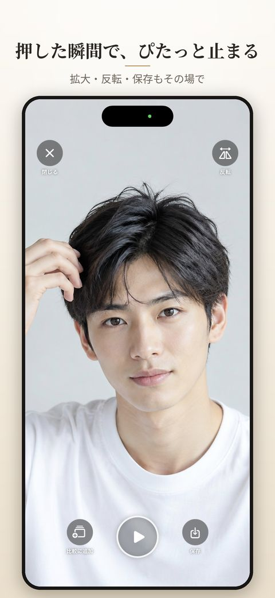
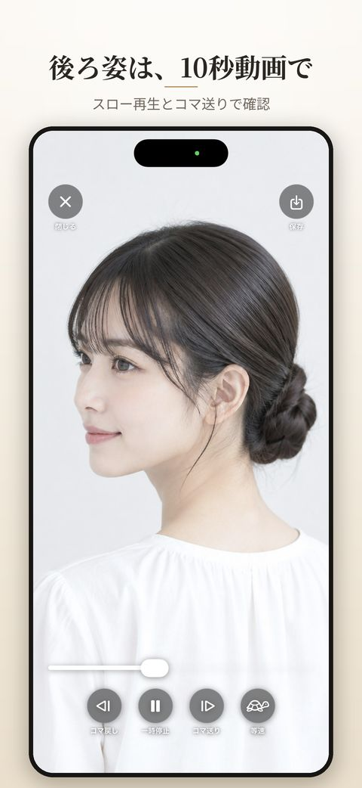
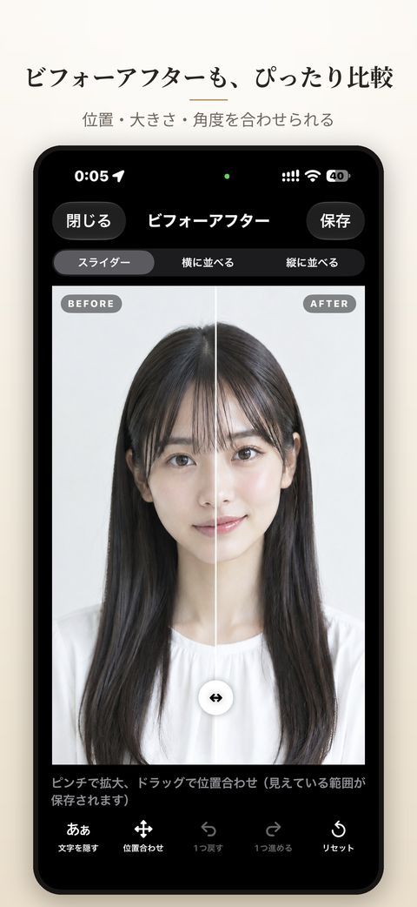
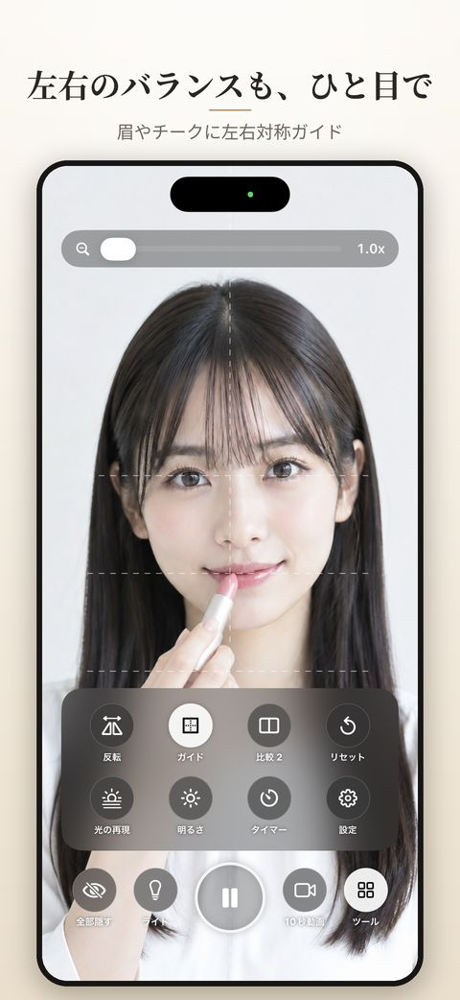
Try it
この鏡、ブラウザで試せます。
アプリと同じボタンの並びで、鏡の操作をこのページで体験できます。「鏡をひらく」を押して、カメラの使用を許可してください。カメラが使えない時は、見本の写真で試せます。3秒さわらないとボタンが薄くなるのも、アプリと同じです。
- 全部隠す：ボタンを消して鏡だけに（右下の「表示」で戻る）
- ライト：画面の上と下が光って顔を明るく
- 静止画（まん中）：押した瞬間で止まる。▶で鏡に戻る
- 10秒動画：録画して、スロー・コマ送りで確認
- ツール：反転・ガイド・リセット・タイマー
映像や10秒動画はこのページの中だけで表示され、どこにも送られず、保存もされません。下の「鏡をとじる」を押すか、ページを離れるとカメラは止まります。
※ アプリの鏡の画面をもとにした体験用の見本です。4K画質や光の再現などはアプリ版でどうぞ。
Why Glow Mirror
ほかの鏡アプリと、ここが違う。
鏡を映すだけなら、どのアプリでもできます。グロウミラーが力を入れたのは、「手に持って毎日使う鏡」として困らないこと。実際の画面でどうぞ。
01 · iPhone · iPad · Mac
1つのアプリで、3台とも。
iPhoneでも、iPadでも、Mac（Appleシリコン搭載機）でも、同じグロウミラーが使えます。「広告を消す」も1回買えば、同じApple Accountのすべての端末に反映。iPadの縦横の回転や、Macのウインドウにも合わせて調整しています。

iPadの横向き。縦向きでも、ボタンの配置が崩れません
02 · No mistouch
触れても、何も起きない。
鏡の画面のどこに触れても、勝手に撮影したり、設定が変わったりしません。手に持ったまま、指が画面にかかっても大丈夫。シャッター音もないので、電車やオフィスでも周りを気にせず使えます。3秒さわらないとボタンが薄くなり、鏡が広く見えます。
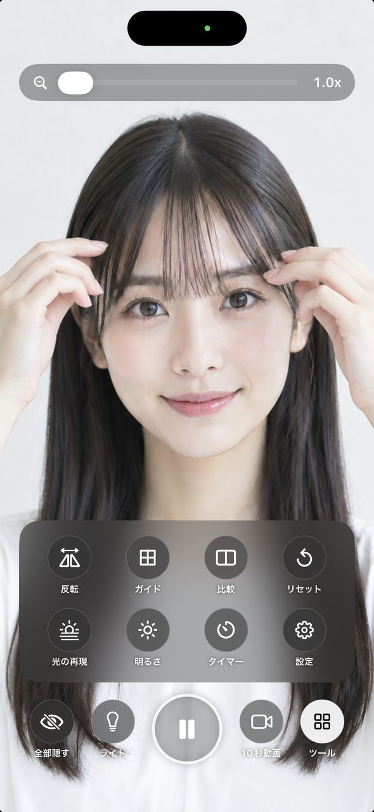
左：鏡の画面 右：ツールを開いたところ
03 · Freeze
押した瞬間で、ぴたっと止まる。
静止画ボタンを押すと、その瞬間の顔で止まります。ピンチで拡大して細かいところを確かめたり、左右を反転したり。気に入ったら保存、いらなければ閉じるだけ。セルフタイマーで3秒後に止めることもできます。
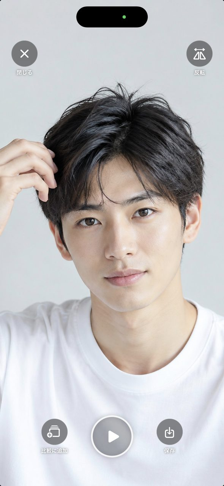
左：静止画の画面 右：App Storeの紹介画面
04 · 10 sec video
見えない後ろ姿は、10秒動画で。
ゆっくり顔を動かしながら録画するだけ。スロー再生とコマ送りで、横顔や後ろ髪、まとめ髪の仕上がりまで確かめられます。録画中は残り秒数が表示されるので、慌てません。
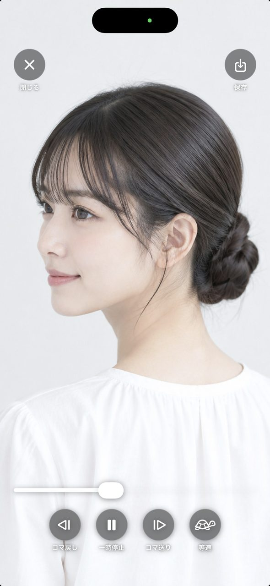
左：10秒動画の再生（スロー・コマ送り） 右：App Storeの紹介画面
05 · Before / After
ビフォーアフターも、ぴったり比較。
2枚の写真をスライダーで見比べたり、横や縦に並べたり。2枚の顔の位置・大きさ・角度を指で合わせられるので、メイクや髪型の違いがはっきり分かります。操作は「1つ戻す」「1つ進める」でやり直せます。3〜10枚の写真はパラパラ動画にも。前回の写真を透かして、同じ位置で撮ることもできます。
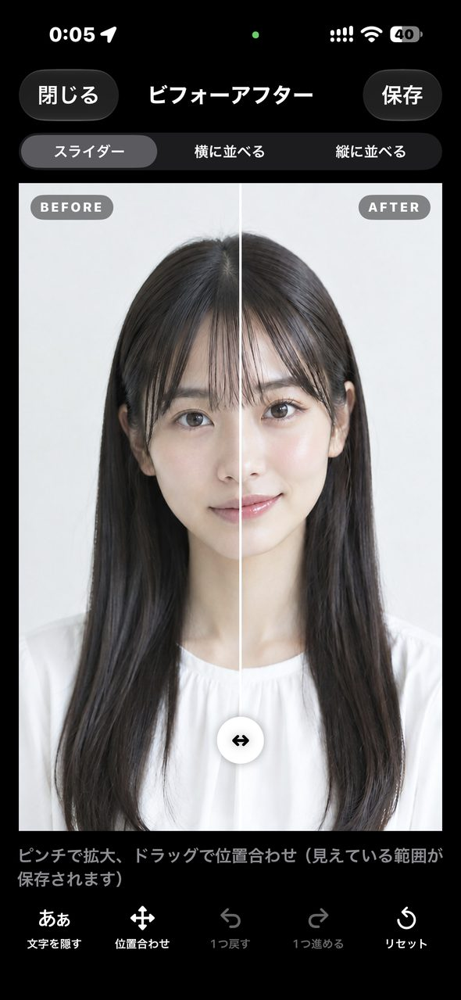
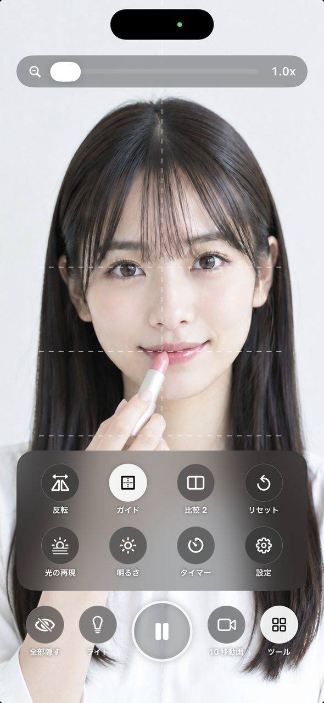
左：ビフォーアフター 右：左右対称ガイド
Everything else
ほかにも、鏡に欲しかった機能。
Reverse
反転
いつもの鏡と逆の、相手から見た顔に。写真で見る自分との違いが分かります。
Light
ライト
画面を明るくして顔を照らします。暗い場所や夜のメイク直しに。
Lighting
光の再現
自然光・オフィス・夕方・レストランで、メイクがどう見えるかを試せます。
Zoom
ズーム最大10倍・明るさ
上のつまみで拡大。まつげや眉の細かいところまで。明るさも調整できます。
Reset
リセット
反転・ライト・ガイドなど、自分で押した設定がわからなくなったら、ひと押しで元どおり。
Your layout
ボタンを自分好みに
下に並ぶボタンを入れ替えられます。反転やライトがオンの状態で起動する設定も。
iPad · Mac
大きな画面でも、そのまま鏡。
iPadは縦でも横でも。Macでは、画面をダブルクリックするとウインドウが鏡の大きさにぴったり合い、もう一度ダブルクリックで元の大きさに戻ります。鏡を横に置いたまま、作業やオンライン会議の前の身だしなみチェックに。
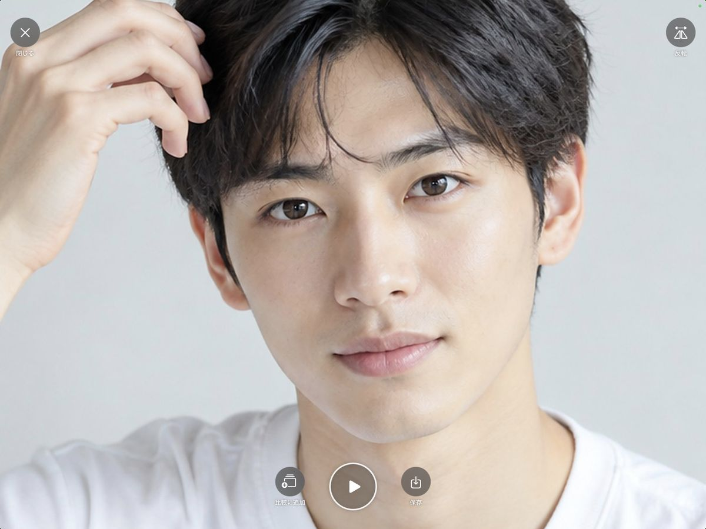
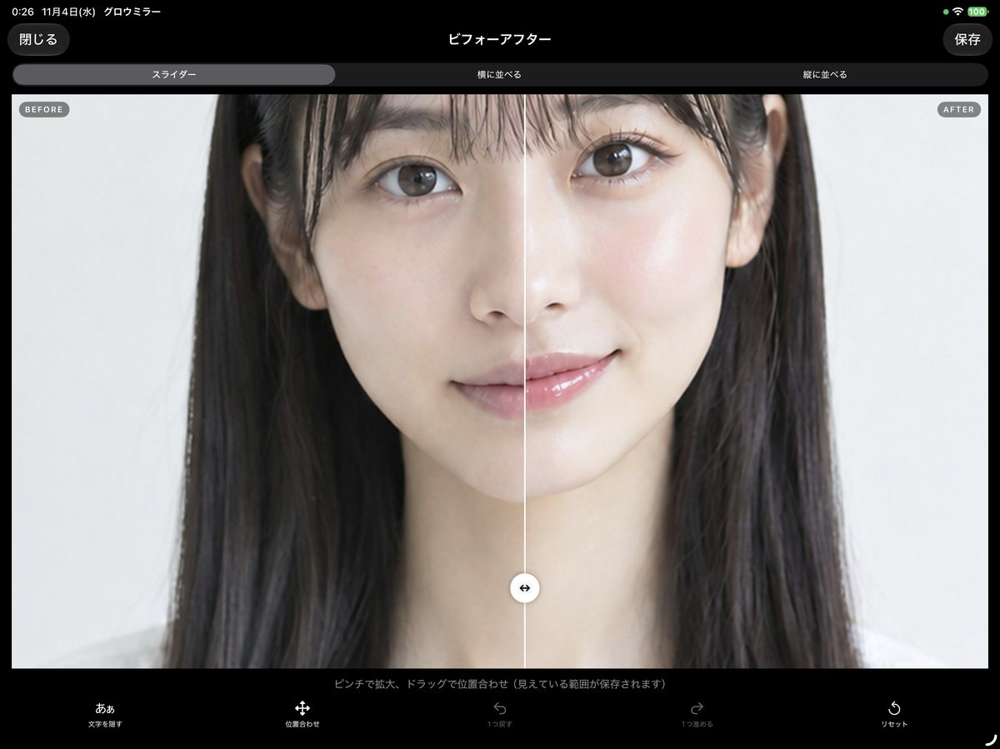
Privacy by design
あなたの顔は、
あなたの端末の中だけ。
鏡アプリだからこそ、安心して使えることを大切にしました。
01
映像を外に送らない
カメラの映像や写真を、開発者や外部のサーバーに送ることはありません。
02
勝手に撮らない
撮影はボタンを押した時だけ。シャッター音もなく、周りを気にせず使えます。
03
保存しない設計
静止画や動画は、保存ボタンを押した時だけ写真に残ります。閉じれば消えるので、容量も増えません。
Price
すべての機能が無料。
鏡・静止画・10秒動画・ビフォーアフターまで、すべての機能を無料でお使いいただけます。広告は、鏡を使っている最中の邪魔にならない場所にだけ表示します。
広告を消す · 買い切り
¥300
- 一度の購入で、アプリ内の広告がすべて消えます
- サブスクリプションではありません
- 同じApple Accountなら、iPhone・iPad・Macすべてで広告が消えます
- 機種変更しても「設定 › 購入を復元」で戻せます
FAQ
よくある質問
撮った写真や動画は、どこに保存されますか？
保存ボタンを押した時だけ、iPhoneの「写真」に保存されます。押さずに閉じれば消えるので、写真アプリがいっぱいになることはありません。
Macでも使えますか？
Appleシリコン（M1以降）を搭載したMacで使えます。Macのカメラは縦横の比率が違うため、顔を切らずに映すと左右に黒い部分が出ます。画面をダブルクリックすると、ウインドウが鏡の大きさにぴったり合います。
「広告を消す」は、ほかの端末でも有効ですか？
はい。同じApple Accountなら、iPhone・iPad・Macのすべてで広告が消えます。新しい端末では「設定 › 購入を復元」を押してください。
アカウント登録は必要ですか？
必要ありません。ダウンロードしてすぐに使えます。